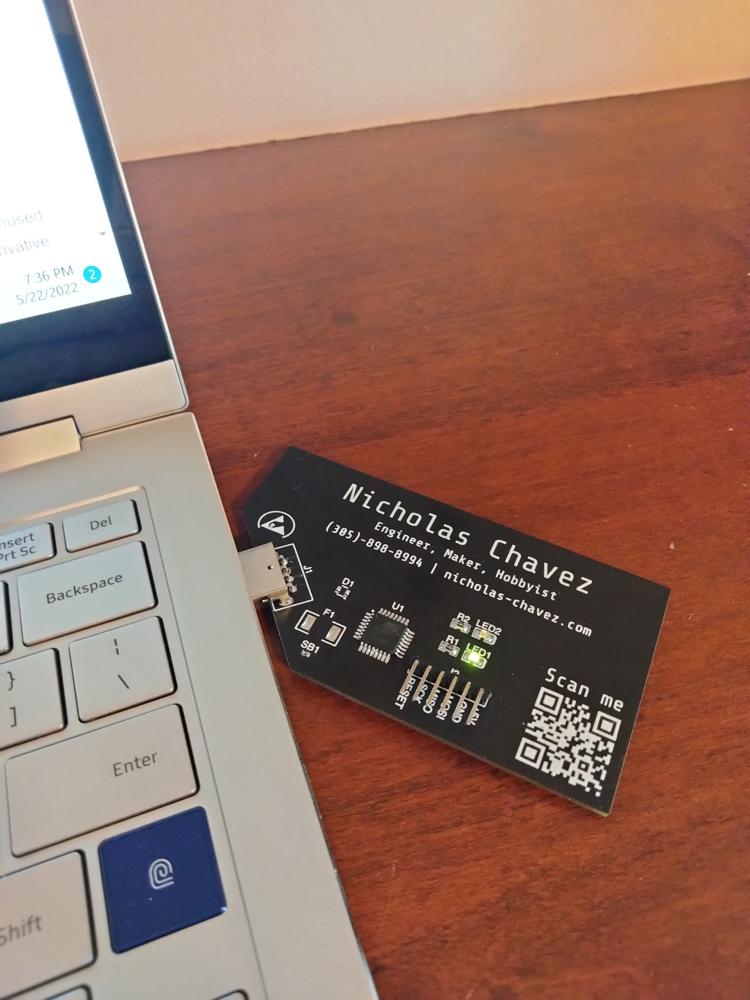

Electronic Business Card
May 22, 2022
I'm proud to announce my latest project, my electronic business card! It is a 2 layer PCB, based around the ATMega8u2 chip. At the moment I haven't been able to program the USB interface to function properly, but otherwise, I'm proud of how this project turned out! I plan on redesigning it in the near future with better functionality and more cost savings.
Personal Website
April 20, 2022
The purpose of this project was to design the frontend of a website in HTML and CSS, and host it on the world wide web to be accessible through any browser. The webpage and menus were designed using Adobe Dreamweaver. This website's directory is hosted on a Windows 10 machine running WAMP (acronym for Windows, Apache, MySQL, and PHP), a solution stack for hosting web applications.
Moving forward, I am interesting on expanding this website to serve primarily as a reference for my personal portfolio, resume, and contact information. The website is still a work in progress, and I plan on refining the UI and site structure for better scalability, as well as implementing a contact form, and playing with databases and other user interfaces.
In addition, this website's version history is available through archive.org, by my own periodical snapshot requests. You can view historical snapshots of this website since it was first launched.
Project Archive
This is where you can find all of my engineering projects I did during high school, and before this website was created.

with a microcontroller
phase angle controller to dim the AC signal to your
bedroom lights, simulating a sunrise instead of being
awaken by a loud noise. It didn't work.
I am placing the processor, the package
is TQFP-32.
I based it off Ben Eater's design.
Here is a clock module, 2 registers.
Based off TTL logic.
ferric chloride (FeCl3)
Project Rocket 2019
I prototyped and designed my own model rocket flight computer. I successfully test flown it twice. I recovered and analyzed the data and rom the first flight but I lost the rocket for the second flight.

computer.

structual parts
undesirable so I opted for
commercial parts instead
some flight data.
center off mass to be offset too much, steering the vehicle too far
off course and outside of the field I was using. The vehicle was
never recovered.
Project Rocket 2022
I origiinally started this project in January 2022 as a continuation of my Rocketry antics from the original project rocket in 2019. I anticipated a first test flight of a new launchpad, launch computer, rocket vehicle, and flight computer by April 2022. I have since put this project on hold. I did, however design and build a new, much improved launchpad from project rocket 2019.
out of a hard wood, and assembled using wood
screws, glue, and features a metal blast plate for
absorbing rocket exhaust.